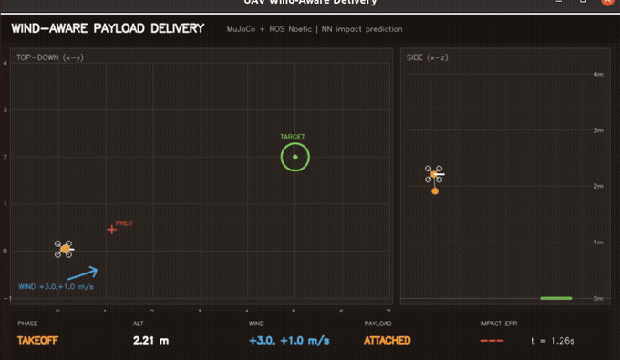
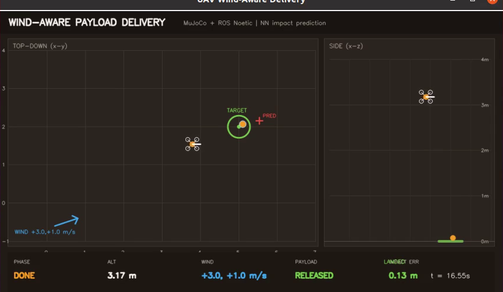

四旋翼风扰下物资精准空投：MuJoCo 仿真与神经网络落点预测
基于 ROS Noetic + MuJoCo 3.12.0 的四旋翼空投模块：无人机吊挂物资起飞，在侧风下计算补偿后的释放点；释放后物资自由落体并受风阻力，最终落入目标区。模块包含 MuJoCo 吊挂/释放模型、几何控制器、弹道积分器、纯 NumPy 落点预测 MLP、任务状态机、ROS 节点和 OpenCV 桌面可视化。

与仓库已有空域模块的区别
| 模块 | 关注点 | 物资释放/落点 |
|---|---|---|
payload_mass_estimation |
从飞行数据估计载荷质量 | 否 |
landing_assessment |
着陆阶段识别与接地载荷 | 否 |
rooftop_landing / rooftop_landing_nn |
屋顶降落点选择 | 否 |
uav_mujoco_sim |
四旋翼仿真底座 | 否 |
| 本模块 | 风扰下释放点补偿 + NN 落点预测 | 是 |
本项目把“吊挂 → 释放 → 自由落体 → 落点误差”串成可评估闭环：网络预测“如果现在释放会落在哪里”，任务层据此把释放点向上风方向平移。
项目结构
uav_wind_aware_delivery/
├── main.py / main.sh 统一入口
├── package.xml / CMakeLists.txt ROS1 catkin 包
├── models/
│ ├── uav_delivery.xml MuJoCo 四旋翼 + 吊挂物资
│ └── impact_mlp.npz 训练好的落点 MLP
├── src/uav_wind_aware_delivery/
│ ├── sim.py MuJoCo 推进、weld、释放、风阻力
│ ├── control.py PID + 几何姿态控制
│ ├── ballistics.py 弹道积分与释放点迭代
│ ├── nn.py 纯 NumPy MLP + Adam
│ ├── mission.py 起飞/巡航/对准/释放/落地状态机
│ ├── state.py 28 维 ROS 状态向量
│ ├── mathutil.py 四元数/欧拉角
│ └── viz.py OpenCV 俯视 + 侧视 + HUD
├── scripts/nodes/ 6 个 ROS 节点
├── launch/ demo / headless / teleop
├── tools/ 训练、评估、单集调试、录制
├── tests/run_all.py 15 个单元测试
├── results/ benchmark / predictor 指标
└── media/ubuntu_air_demo.mp4 Ubuntu 桌面实操视频
一、环境准备
| 组件 | 版本 |
|---|---|
| Ubuntu | 20.04.6 LTS（VMware） |
| ROS | Noetic（/opt/ros/noetic） |
| Python（计算节点） | 3.11，项目内 .venv |
| MuJoCo | 3.12.0 |
| NumPy | 1.26.4 |
| OpenCV | 4.2（系统 Python，仅 Viewer） |
MuJoCo 3.12 要求 Python ≥ 3.10，而 Ubuntu 20.04 系统 Python 是 3.8。因此 roslaunch/roscore 仍用系统 Python 3.8，仿真节点通过 _bootstrap.use_venv() 自动 exec 到项目 venv；Viewer 使用系统 Python 的 OpenCV。无需修改 .bashrc、PATH 或系统 Python 包。
# 1. 放入 catkin 工作区
mkdir -p ~/air_ws/src
cp -r <仓库>/src/air/uav_wind_aware_delivery ~/air_ws/src/
# 2. Python 3.11 依赖（首次；已有可用 venv 可跳过）
cd ~/air_ws/src/uav_wind_aware_delivery
bash scripts/setup_env.sh
# 3. 编译
cd ~/air_ws
source /opt/ros/noetic/setup.bash
catkin_make -j2
source devel/setup.bash
如果 MuJoCo 的 venv 不在默认路径：
export UAV_VENV_PYTHON=/path/to/python3.11
二、启动流程
每个新终端先：
source /opt/ros/noetic/setup.bash
source ~/air_ws/devel/setup.bash
1. 完整空投演示（推荐）
roslaunch uav_wind_aware_delivery demo.launch \
wind_x:=3.0 wind_y:=1.0 \
target_x:=5.0 target_y:=2.0
会打开 OpenCV 窗口：
- 左侧：俯视图（无人机、物资、目标区、风矢量、预测落点、轨迹）；
- 右侧：侧视图（高度、吊挂、释放）；
- 底部 HUD：
PHASE / ALT / WIND / PAYLOAD / IMPACT ERR。
任务流程：
takeoff → cruise → align → released → done
2. 无窗口（SSH/评测）
roslaunch uav_wind_aware_delivery headless.launch wind_x:=3.0 wind_y:=1.0
3. 键盘手动控制
roslaunch uav_wind_aware_delivery teleop.launch
W/S 前后、A/D 左右、R/F 升降、Q 退出。手动模式只检查控制链路，不自动释放。
4. 统一入口
python3 main.py --info
python3 main.py --launch demo --wind-x 3.0 --wind-y 1.0
python3 main.py --test
python3 main.py --train
python3 main.py --evaluate
三、ROS 接口
| 话题 | 类型 | 方向 | 说明 |
|---|---|---|---|
/uav/state |
std_msgs/Float64MultiArray |
发布 | 28 维状态 |
/uav/cmd |
std_msgs/Float64MultiArray |
控制→仿真 | 世界系合力 3 + 世界系力矩 3 |
/uav/setpoint |
geometry_msgs/PoseStamped |
任务→控制 | 位置设定点 |
/uav/release |
std_msgs/Bool |
任务→仿真 | 释放物资（只释放一次） |
/uav/predicted_impact |
geometry_msgs/PointStamped |
预测→Viewer | 当前状态释放的预测落点 |
/uav/mission |
std_msgs/String |
任务→Viewer | 当前阶段 |
28 维状态：
0 t
1:4 UAV x,y,z
4:8 quat w,x,y,z
8:11 vx,vy,vz
11:14 wx,wy,wz
14:17 roll,pitch,yaw
17:20 payload x,y,z
20:23 payload vx,vy,vz
23 released
24 landed
25 payload_contact
26:28 wind x,y
四、方法
1. 吊挂与释放
无人机与物资都是 MuJoCo 自由刚体，初始用 <weld> equality 把物资固定在机腹。release() 把 data.eq_active[weld] 置 0，物资保留释放瞬间速度，进入自由落体；风阻力：
a_xy = k_drag * (wind_xy - v_xy) / m
a_z = -g - 0.02 * v_z / m
2. 落点预测 MLP
输入 6 维：[release_height, vx, vy, vz, wind_x, wind_y]；输出 2 维：相对释放点的落点偏移 [dx,dy]。网络为 6-64-64-2 tanh MLP，输入/输出标准化，Adam 训练；6 000 组弹道积分样本，110 epochs。
3. 释放点补偿
目标点 T=(5,2)，释放高度 h=3 m。迭代：
rel ← T
repeat 4:
off ← MLP(h, 0, 0, 0, wind)
rel ← T − off
无人机飞到 rel 上方，悬停稳定后释放。无补偿基线直接把释放点设为 T，风会把物资吹离目标。
五、实测结果
预测器（验证集 2 000 组）
| 指标 | 数值 |
|---|---|
| 验证 RMSE | 0.0143 m |
| 验证 MAE | 0.0109 m |
| 零偏移基线 RMSE | 0.8661 m |
| 相对零基线提升 | 98.35% |
闭环空投（10 组随机风，成功半径 0.5 m）
| 方法 | 成功率 | 平均落点误差 | P90 误差 | 平均完成时间 |
|---|---|---|---|---|
| NN 释放点补偿 | 10/10（100%） | 0.1604 m | 0.2481 m | 12.73 s |
| 不补偿（目标正上方释放） | 0/10（0%） | 1.0455 m | 1.3195 m | 12.59 s |
平均误差降低 84.7%。
固定风 (3.0, 1.0) m/s 的 ROS 全链：
takeoff t=0.05 → cruise t=3.17 → align t=12.19
released t=13.00 → done t=14.54
payload landing error 0.13 m

复现
cd ~/air_ws/src/uav_wind_aware_delivery
# 训练（约 1 分钟，CPU）
.venv/bin/python tools/train_predictor.py
# 10 组随机风 × 2 方法
.venv/bin/python tools/evaluate.py
# 单元测试
.venv/bin/python tests/run_all.py # 15/15 OK
结果写入 results/benchmark.json、results/predictor_metrics.json。
六、Ubuntu 桌面实操视频
- 视频：
media/ubuntu_air_demo.mp4 - 规格：1280×796，15 fps，45 s，H.264
- 内容：Ubuntu 桌面打开 OpenCV Viewer，展示起飞、巡航、对准、释放、落地与 HUD 误差。
录制脚本：
bash scripts/record_demo.sh
使用 ffmpeg -f x11grab 录屏；需要桌面会话（DISPLAY=:0）。GIF 由视频裁剪 Viewer 区域生成，见 docs/img/air/uav_wind_aware_delivery.gif。
七、常见报错
1. ModuleNotFoundError: No module named 'mujoco'
仿真节点没有切到 Python 3.11：
export UAV_VENV_PYTHON=/path/to/python3.11
.venv/bin/python -c "import mujoco; print(mujoco.__version__)"
2. ROS_DISTRO: unbound variable
录制/启动脚本里不要用 set -u 去 source ROS 的 setup.bash。
3. Viewer 不显示
必须在 Ubuntu 桌面会话运行：
export DISPLAY=:0
export XAUTHORITY=/run/user/1000/gdm/Xauthority
仅 SSH 无桌面时用 headless.launch。
4. catkin_make 找不到包
确认 src/air/uav_wind_aware_delivery/package.xml 的 <name> 与目录一致，并先 source /opt/ros/noetic/setup.bash。
5. 释放后物资不落地
检查 /uav/release 是否发布、data.eq_active 是否置 0；可运行：
.venv/bin/python tools/check_episode.py 3 1
八、验证范围与限制
- 实测平台为 ROS Noetic，未在 ROS 2 Humble 验证。
- 控制器为简化几何控制（直接施加世界系合力/力矩），没有实现四旋翼混控与电机动力学；重点是空投任务层，不宣称是飞控级模型。
- 风场为水平常值风 + 线性阻力，没有阵风/湍流模型。
- 闭环评估为 10 组随机风（仿真），不是硬件飞行；成功率对风场上界敏感。
- 落点预测网络在训练分布内精度很高，超出
|wind|>5 m/s或释放高度范围时需重新训练。 - 未做视觉目标检测；目标点由参数给定。
九、源码与许可
源码：src/air/uav_wind_aware_delivery/。MIT License。
15 tests, failures=0, errors=0